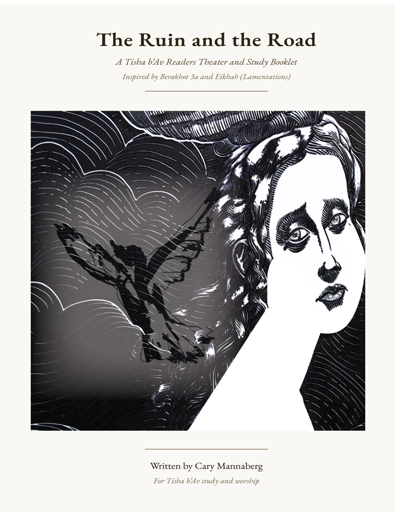

Printing instructions: Open in browser → File → Print →
Paper size: Letter (8.5×11) •
Orientation: Landscape •
Two-sided: On •
Binding: Short-Edge (flip on short side).
Stack all 4 sheets, fold in half, staple along the center fold.
If the back side comes out rotated 180°, try “Long-Edge” binding instead.

4. The Road — What is one small step forward you feel willing to take?
5. Hashiveinu — How might “renew our days as of old” mean courage, not nostalgia?
6. Draw — Sketch something from the play: the dove, the ruin, the woman returning, Elijah at the threshold…
1. The Ruin — What “ruins” do you see in our world or in your own story?
2. The Stranger — Who has met you at the threshold of pain?
3. The Dove — What does it mean that Hashem cries with us?
On Tisha b’Av, we sit in the ruins—of the Temple, of our people’s traumas, and of our own world’s unraveling. This booklet offers a readers theater piece, commentary, and musical and ritual guides for synagogue use. It weaves the Talmudic story of Rabbi Yosi and Elijah with Lamentations and our contemporary experience of crumbling institutions, broken trust, and violence in word and deed.
Three themes carry this story. They are ancient words. They are also the words we reach for when everything else has been taken away.
Use any of: lyre, classical guitar, harp, violin, cello, or a small combination. The sound should be ancient, sparse, and fragile. Silence is part of the music.
| Cue | Theme | When |
|---|---|---|
| A | Theme A | Prelude and early narration |
| B | Dove’s cry | High harmonic or gentle glissando over Theme A |
| C | Theme B | Stranger’s lines |
| D | Theme C | “A single honest word…” and Mara’s step |
| E | Theme D | Lamentations 5:21 chant and instrumental continuation |
| F | Silence | Music fades; room holds quiet |
This play is a midrash—a retelling—rooted in a brief and extraordinary passage from the Talmud. Here is the original story.
— Babylonian Talmud, Berakhot 3a
Turn us toward You, O Lord, and we shall return;
renew our days as of old.
After the Hashiveinu, allow the music to fade and hold silence. The leader may say quietly:
“Even in the ruins, we take one step forward. Even in the darkness, we seek the road. Even now—we turn.”
Softly turn up lights and move to discussion prompts on page 14.
She has been here before.
In this reading, Mara is Naomi—once a Nazirite, bound by vow to the shrine at Bethlehem. She came there as a young unmarried woman, drawn by devotion rather than obligation. It was at the shrine that she met Elimelech—a scion of a wealthy family who had turned his back on inheritance to sit with Torah. Their love grew quietly, in the margins of the sanctuary, between prayers.
The Kohen did not approve. Elimelech’s family wealth was bound up with the shrine’s economy, and a man who preferred study to commerce was a disruption the Kohen could not afford. So he manufactured a scandal—whispered accusations, a false account of dishonor—and brought it before the council. Naomi’s Nazirite vows were annulled. The couple was pushed to the margins of Judean life. When armies pressed in from the east, they fled to Moab.
In Moab the family found footing. Her sons Mahlon and Chilion married well. Then the boys died. Elimelech died too.
She returned to Judah—not alone. Ruth, her Moabite daughter-in-law, refused to leave her side. Ruth is not in this scene. She waits at the inn at the edge of Bethlehem, patient and lovely, faithful as morning. Naomi came ahead alone, pulled by something she could not name—a need to return to the place where everything began and everything was taken.
She came back to the shrine at Bethlehem. She found it desecrated. Idols where the altar had been. Silence where there had been song. The institution that had betrayed her was a ruin. And so, she thought, was she.
This is where Elijah finds her. At the one broken place that had once been completely hers—where she had first prayed, first loved, and first been broken by someone who wore the robes of holiness.
The stranger does not tell her to rebuild it. He tells her to turn. This is her Teshuvah—not a grand return, not a rebuilt altar, but a turning of the heart. Back toward Hashem. Back toward the road, and the lovely Moabite daughter waiting at the inn, who has shown her more faithful love than any shrine ever did.
אַל תִּקְרְאנָה לִי נָעֳמִי קְרֶאןָ לִי מָרָא“Do not call me Naomi; call me Mara.” — Ruth 1:20
She comes to this story carrying all three: the devotion that brought her back, the faith she is not sure she still has, and the hope she has not yet found words for.
This ritual frames The Ruin and the Road as a modern midrash for Tisha b’Av: we acknowledge destruction, listen for Hashem’s grief, and seek the faintest glimmer of a road forward. The play moves through D’veikut, Emunah, and Tikvah—not as answers, but as the questions a broken heart still dares to ask.
Present the three theme readings before the play begins. Allow the silence after each to settle fully—at least 30 seconds—before moving to the next. These are not preamble. They are preparation.
Leader reads:
“On this night we remember every place that was meant to be safe but was not. Every institution that failed. Every word sharpened into a weapon. Every act of violence that tore the fabric of creation. We sit in the ruins—not to stay there, but to listen.
We carry three things into this darkness: the devotion that brings us back even when we are broken, the faith we are not sure we still have, and the hope we have not yet found words for.
We begin.”
Hold silence for 30–60 seconds, then begin the readers theater.